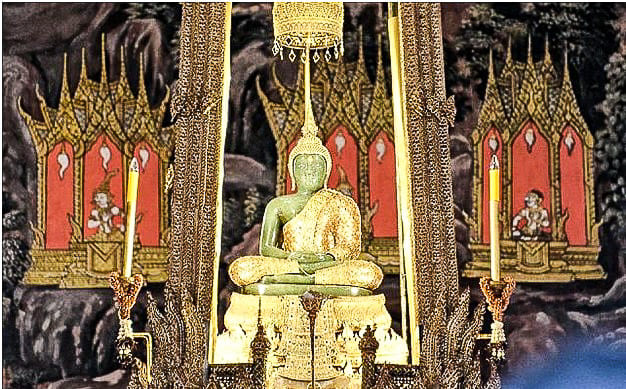

Королевский дворец

Королевский дворец (The Grand Palace) — один из главных символов Бангкока и одна из самых известных достопримечательностей Таиланда. Огромный комплекс включает королевские здания, храмы, дворики и знаменитый храм Изумрудного Будды (Wat Phra Kaew).
Где находится
Дворец расположен в историческом центре Бангкока, в районе Пхра Накхон, на улице Na Phra Lan Road.
Стоимость посещения
Посещение платное:
- Иностранцы — 500 бат за человека (1.288 ₽)
- Билет включает посещение территории Большого дворца и храма Изумрудного Будды.
- Билеты продаются с 8:30 до 15:30.

Также можно арендовать аудиогид — 200 бат (515,23 ₽). Доступен русский язык.
Время работы
Дворец открыт ежедневно с 8:30 до 16:30.
Для туриста лучше приезжать утром: меньше людей и не так жарко.
Как добраться
Самый интересный вариант — по реке:
- Доехать на BTS до станции Saphan Taksin.
- Выйти через Exit 2.
- Дойти до причала Sathorn Pier.
- Сесть на Chao Phraya Express Boat.
- Выйти на причале Tha Chang (N9).
- От причала до дворца можно дойти пешком.
Другой удобный вариант — MRT Blue Line до станции Sanam Chai, Exit 1. Оттуда можно продолжить путь пешком или на автобусе.
Что посмотреть внутри
Главное место комплекса — храм Изумрудного Будды (Wat Phra Kaew) , один из самых почитаемых буддийских храмов Таиланда. Также стоит посмотреть богато украшенные здания дворца, золотые ступы, статуи и фрески.
Что находится рядом
Королевский дворец удобно объединить с другими достопримечательностями исторического центра:
- Ват Пхо — примерно в 10 минутах пешком.
- Река Чао Прайя — рядом с дворцом.
- Ват Арун — находится на противоположном берегу реки, туда можно переправиться на лодке.
- Чайнатаун — можно посетить после прогулки по историческому центру.
- Каосан Роуд — популярная туристическая улица неподалёку.
Важное для туристов
Это действующий королевский и религиозный комплекс, поэтому необходимо соблюдать строгий дресс-код: одежда должна закрывать плечи и колени.
Лучше заранее надеть длинные брюки/юбку и футболку или рубашку с закрытыми плечами.